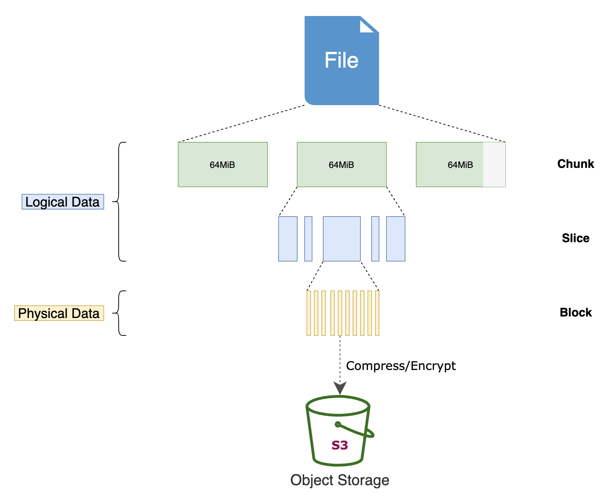
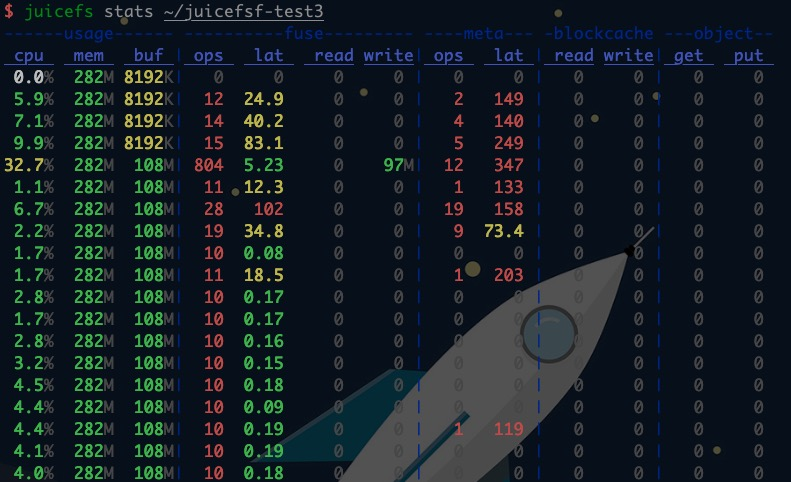
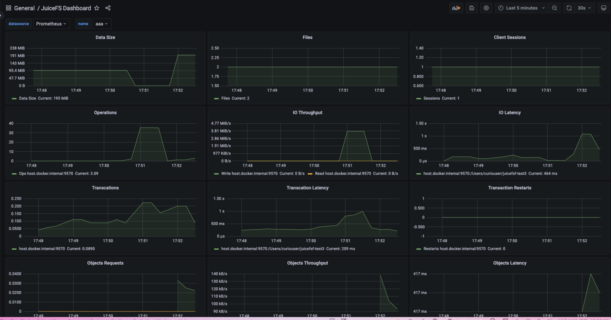
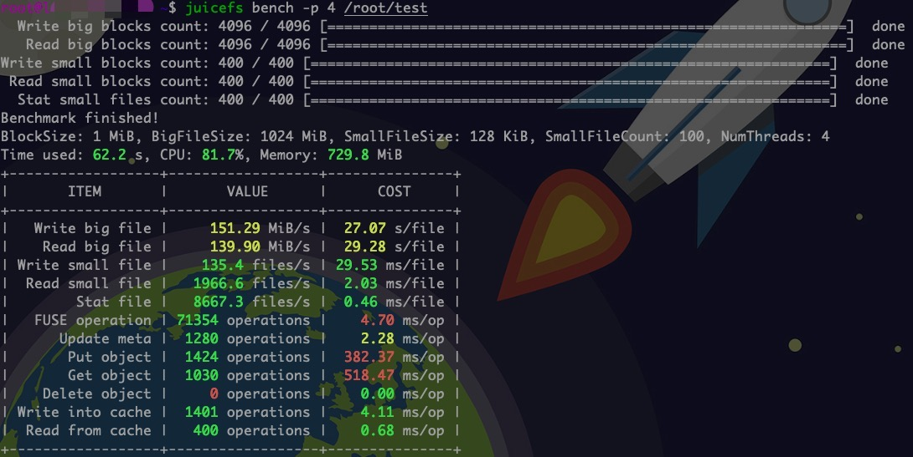
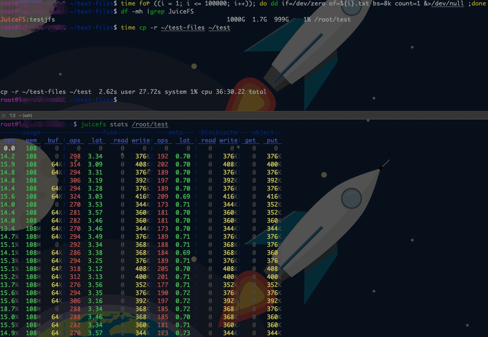
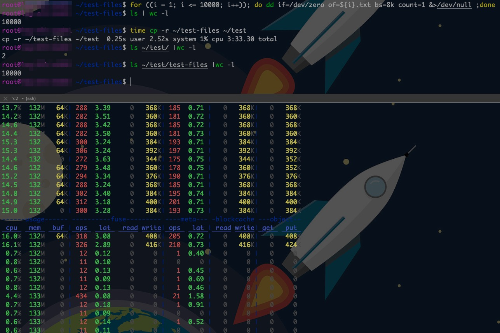

JucisFS
一、简介
Github：https://github.com/juicedata/juicefs
中文文档：https://juicefs.com/docs/zh/community/introduction/#
JuiceFS 采用「数据」与「元数据」分离存储的架构，从而实现文件系统的分布式设计。使用 JuiceFS 存储数据，数据本身会被持久化在对象存储（例如，Amazon S3），相对应的元数据可以按需持久化在 Redis、MySQL、TiKV、SQLite 等多种数据库中。
核心特性
- POSIX 兼容：像本地文件系统一样使用，无缝对接已有应用，无业务侵入性；
- HDFS 兼容：完整兼容 HDFS API，提供更强的元数据性能；
- S3 兼容：提供 S3 网关 实现 S3 协议兼容的访问接口；
- 云原生：通过 Kubernetes CSI 驱动 轻松地在 Kubernetes 中使用 JuiceFS；
- 分布式设计：同一文件系统可在上千台服务器同时挂载，高性能并发读写，共享数据；
- 强一致性：确认的文件修改会在所有服务器上立即可见，保证强一致性；
- 强悍性能：毫秒级延迟，近乎无限的吞吐量（取决于对象存储规模），查看性能测试结果；
- 数据安全：支持传输中加密（encryption in transit）和静态加密（encryption at rest），查看详情；
- 文件锁：支持 BSD 锁（flock）和 POSIX 锁（fcntl）；
- 数据压缩：支持 LZ4 和 Zstandard 压缩算法，节省存储空间。
应用场景
JuiceFS 为海量数据存储设计，可以作为很多分布式文件系统和网络文件系统的替代，特别是以下场景：
- 大数据分析：HDFS 兼容，没有任何特殊 API 侵入业务；与主流计算引擎（Spark、Presto、Hive 等）无缝衔接；无限扩展的存储空间；运维成本几乎为 0；完善的缓存机制，高于对象存储性能数倍。
- 机器学习：POSIX 兼容，可以支持所有机器学习、深度学习框架；共享能力提升团队管理、使用数据效率。
- 容器集群中的持久卷：Kubernetes CSI 支持；持久存储并与容器生存期独立；强一致性保证数据正确；接管数据存储需求，保证服务的无状态化。
- 共享工作区：可以在任意主机挂载；没有客户端并发读写限制；POSIX 兼容已有的数据流和脚本操作。
- 数据备份：在无限平滑扩展的存储空间备份各种数据，结合共享挂载功能，可以将多主机数据汇总至一处，做统一备份。
文件存储原理


元数据存储Redis内存使用量与文件系统的关系
JuiceFS 元数据引擎的使用空间主要与文件系统中的文件数量有关。每一个文件的元数据会大约占用 300 字节内存
# 如果最大1GB内存的Redis，减去124M的系统消耗，可用900M，可存储3145728个JuiceFS文件元数据
1024M-124M=900M=943718400 Bytes
943718400 Bytes / 300 Bytes = 314,5728
# 如果最大1GB内存的Redis，减去88M的系统消耗，可用944M，可存储3299519个JuiceFS文件元数据
1024M-88M=944 M=989855744 Bytes
989855744 Bytes / 300 Bytes = 329,9519
# 如要存储1亿个文件，大约需要 30GiB 内存
300Bytes * 1,0000,0000 =300,0000,0000 Bytes ~= 28610.3Mb ~= 27.94GB
通过 Redis 的 INFO memory 命令查看具体的内存使用量
> INFO memory
used_memory: 19167628056
used_memory_human: 17.85G
used_memory_rss: 20684886016
used_memory_rss_human: 19.26G
...
used_memory_overhead: 5727954464
...
used_memory_dataset: 13439673592
used_memory_dataset_perc: 70.12%
其中 used_memory_rss 是 Redis 实际使用的总内存大小，这里既包含了存储在 Redis 中的数据大小（也就是上面的 used_memory_dataset），也包含了一些 Redis 的系统开销（也就是上面的 used_memory_overhead）。前面提到每个文件的元数据大约占用 300 字节是通过 used_memory_dataset 来计算的，如果你发现你的 JuiceFS 文件系统中单个文件元数据占用空间远大于 300 字节，可以尝试运行 juicefs gc命令来清理可能存在的冗余数据。
JuiceFS安全问题
元数据存储安全
客户端挂载安全
二、安装
Linux
JFS_LATEST_TAG=$(curl -s https://api.github.com/repos/juicedata/juicefs/releases/latest | grep 'tag_name' | cut -d '"' -f 4 | tr -d 'v')
wget "https://github.com/juicedata/juicefs/releases/download/v${JFS_LATEST_TAG}/juicefs-${JFS_LATEST_TAG}-linux-amd64.tar.gz"
tar -zxf "juicefs-${JFS_LATEST_TAG}-linux-amd64.tar.gz"
mv juicefs /usr/local/bin
MacOS
brew tap juicedata/homebrew-tap
brew install juicefs
Windows
参考：https://juicefs.com/docs/zh/community/installation#windows-%E7%B3%BB%E7%BB%9F
Docker
FROM ubuntu:20.04
RUN apt update && apt install -y curl fuse && \
apt-get autoremove && \
apt-get clean && \
rm -rf \
/tmp/* \
/var/lib/apt/lists/* \
/var/tmp/*
RUN set -x && \
mkdir /juicefs && \
cd /juicefs && \
JFS_LATEST_TAG=$(curl -s https://api.github.com/repos/juicedata/juicefs/releases/latest | grep 'tag_name' | cut -d '"' -f 4 | tr -d 'v') && \
curl -s -L "https://github.com/juicedata/juicefs/releases/download/v${JFS_LATEST_TAG}/juicefs-${JFS_LATEST_TAG}-linux-amd64.tar.gz" \
| tar -zx && \
install juicefs /usr/bin && \
cd .. && \
rm -rf /juicefs
CMD [ "juicefs" ]
客户端更新
JuiceFS 客户端只有一个二进制程序，升级新版只需用新版程序替换旧版程序即可。
**注意**对于已经使用旧版 JuiceFS 客户端挂载好的文件系统，需要先[卸载文件系统](https://juicefs.com/docs/zh/community/getting-started/for_distributed#7-卸载文件系统)，然后用新版 JuiceFS 客户端重新挂载。 卸载文件系统时需确保没有任何应用正在访问，否则将会卸载失败。不可强行卸载文件系统，有可能造成应用无法继续正常访问。
三、部署
1、元数据存储Redis配置要求
<username>是 Redis 6.0 之后引入的，如果没有用户名可以忽略，但密码前面的:冒号需要保留，如redis://:<password>@<host>:6379/1- 如果没有改变Redis默认端口号6379，可以不用填写，如
redis://:<password>@<host>/1，否则需要显式指定端口号 - 对于Redis哨兵模式，
META-URL可以指定为redis[s]://[[USER]:PASSWORD@]MASTER_NAME,SENTINEL_ADDR[,SENTINEL_ADDR]:SENTINEL_PORT[/DB]
2、对象存储OSS配置
①创建RAM子用户
- 禁止控制台访问
- 获取Access Key和Access Secret
②创建自定义策略
{
"Version": "1",
"Statement": [
{
"Effect": "Allow",
"Action": [
"oss:DeleteObject",
"oss:GetObject",
"oss:HeadObject",
"oss:PutObject"
],
"Resource": "acs:oss:*:<阿里云主账号的UID>:<OSS Bucket名字>/*"
}
]
}
③RAM用户绑定自定义策略
3、创建文件系统
①Redis+OSS
set +o history
export ACCESS_KEY=对象存储引擎OSS的用户名
export SECRET_KEY=对象存储引擎OSS的用户密码
export META_PASSWORD=元数据存储引擎redis密码
juicefs format \
--storage oss \
--bucket https://OSS Bucket内网访问URL \
--capacity 100 \
--inodes 100 \
"redis://127.0.0.1:6379/1" \
testjfs
②Redis+Minio
MinIO是开源的轻量级对象存储，兼容 Amazon S3 API。
JuiceFS 仅支持路径风格的 MinIO URI 地址，例如：
http://127.0.0.1:9000/myjfs。
MINIO_REGION环境变量可以用于设置 MinIO 的 region，如果不设置，默认为us-east-1。
set +o history
export ACCESS_KEY=对象存储引擎Minio的用户名
export SECRET_KEY=对象存储引擎Minio的用户密码
export META_PASSWORD=元数据存储引擎redis密码
juicefs format \
--storage minio \
--bucket http://127.0.0.1:9000/juicefs \
"redis://127.0.0.1:6379/1" \
testjfs
③Redis+WebDAV
WebDAV 是 HTTP 的扩展协议，有利于用户间协同编辑和管理存储在万维网服务器的文档
set +o history
export ACCESS_KEY=对象存储引擎WebDAV的用户名
export SECRET_KEY=对象存储引擎WebDAV的用户密码
export META_PASSWORD=元数据存储引擎redis密码
juicefs format \
--storage webdav \
--bucket http://<webdav的endpoint>/ \
--capacity 100 \
--inodes 100 \
"redis://127.0.0.1:6379/1" \
testjfs
三、挂载
0 、挂载参数
| 参数 | 含义 | 默认值 |
|---|---|---|
| --metrics value | 监控数据导出地址 | 127.0.0.1:9567 |
| --consul value | consul 注册中心地址 | 127.0.0.1:8500 |
| --no-usage-report | 不发送使用量信息 | false |
| -d, --background | 后台运行 | false |
| --no-syslog | 禁用系统日志 | false |
| --log value | 后台运行时日志文件的位置 | $HOME/.juicefs/juicefs.log/var/log/juicefs.log |
| -o value | 其他 FUSE 选项 | |
| --attr-cache value | 属性缓存过期时间；单位为秒 | 1 |
| --entry-cache value | 文件项缓存过期时间；单位为秒 | 1 |
| --dir-entry-cache value | 目录项缓存过期时间；单位为秒 | 1 |
| --enable-xattr | 启用扩展属性 (xattr) 功能 | false |
| --bucket value | 为当前挂载点指定访问访对象存储的 endpoint | |
| --get-timeout value | 下载一个对象的超时时间；单位为秒 | 60 |
| --put-timeout value | 上传一个对象的超时时间；单位为秒 | 60 |
| --io-retries value | 网络异常时的重试次数 | 10 |
| --max-uploads value | 上传对象的连接数 | 20 |
| --max-deletes value | 删除对象的连接数 | 2 |
| --buffer-size value | 读写缓存的总大小；单位为 MiB | 300 |
| --upload-limit value | 上传带宽限制，单位为 Mbps | 0 |
| --download-limit value | 下载带宽限制，单位为 Mbps | 0 |
| --prefetch value | 并发预读 N 个块 | 1 |
| --writeback | 后台异步上传对象 | false |
| --cache-dir value | 本地缓存目录路径； 使用 : (Linux、macOS)或 ; (Windows)隔离多个路径 |
|
| --cache-size value | 缓存对象的总大小；单位为 MiB | 102400 |
| --free-space-ratio value | 最小剩余空间比例 | 0.1 |
| --cache-partial-only | 仅缓存随机小块读 | false |
| --read-only | 只读模式 | false |
| --open-cache value | 打开的文件的缓存过期时间(0代表关闭这个特性） 单位为秒 |
0 |
| --subdir value | 将某个子目录挂载为根 | "$HOME/.juicefs/cache" "/var/jfsCache" |
| --backup-meta value | 自动备份元数据到对象存储的间隔时间； 单位秒 (0 表示不备份) |
3600 |
| --heartbeat value | 发送心跳的间隔 (秒);建议所有客户端使用相同的心跳值 | 12 |
| --upload-delay value | 数据上传到对象存储的延迟时间，支持秒分时精度， 对应格式分别为 ("s", "m", "h") |
0 |
| --no-bgjob | 禁用后台作业（清理、备份等） | false |
1、Linux挂载
juicefs mount 挂载参数 元数据存储引擎访问地址 挂载点
set +o history
export META_PASSWORD=元数据存储引擎redis密码
juicefs mount -d --metrics 0.0.0.0:9567 redis://127.0.0.1/1 /root/test
2、MacOS挂载
JuiceFS 通过 FUSE 实现 POSIX 接口的兼容，在 macOS 系统上原生并没有提供 FUSE 的支持，需要借助 macFUSE 来实现相应接口的抽象。
MacFUSE官网：https://osxfuse.github.io
set +o history
export META_PASSWORD=元数据存储引擎redis密码
juicefs mount -d --metrics 0.0.0.0:9567 redis://127.0.0.1/1 /root/test
参考：https://juicefs.com/zh-cn/blog/usage-tips/using-juicefs-on-apple-m1
3、自动挂载
拷贝 juicefs 为 /sbin/mount.juicefs，然后按照下面的格式添加一行到 /etc/fstab：
<元数据存储引擎URL> <挂载点> juicefs _netdev[,其他挂载参数] 0 0
# 例如：
redis://localhost:6379/1 /jfs juicefs _netdev,max-uploads=50,writeback,cache-size=204800 0 0
set +o history
export META_PASSWORD=元数据存储引擎redis密码 && mount -a
默认情况下，CentOS 6 在启动后不会自动挂载网络文件系统，你可以使用下面的命令开启它：
sudo chkconfig --add netfs
四、管理
1、配置文件系统
juicefs config redis://127.0.0.1:6379/1
juicefs config redis://127.0.0.1:6379/1 --capacity 100
juicefs config redis://127.0.0.1:6379/1 --inodes 100
2、回收站设置
- JuiceFS的回收站功能需要使用 1.0.0 及以上版本
- 回收站本身是一个名为
.trash的目录，会被自动创建在 JuiceFS 的根目录/下，一般即对应挂载点目录。 - 回收站内固定只有两级深度。第一级为根据时间以
年-月-日-小时格式命名的目录（如2021-11-30-10），系统会自动创建它，并将在这个小时内删除的所有文件都放在此目录下。第二级即为平铺的用户文件和空目录（通常的rm -r <dir>命令实际会先逐个删除目标目录下文件，再删除空目录）。第一级目录的命名取自 UTC 时间，与中国北京时间相差 8 个小时。 - 回收站内不再保留原来的目录树结构，为了能在不影响正常操作性能的前提下，尽可能提供恢复原树型结构的信息，回收站内的文件被自动重命名成
{父目录 inode}-{文件 inode}-{原始文件名}格式。其中inode是文件系统内部的管理信息，如果用户并不需求文件原始路径，则直接关注最后的原始文件名即可。 - JuiceFS 设计并默认开启了回收站功能，会自动将用户删除的文件移动到隐藏的回收站目录内，保留一段时间后才将数据真正清理。
- 旧版本 JuiceFS 欲使用回收站，需要在升级所有挂载点后通过
config命令手动将--trash-days改为需要的正整数值。
juicefs config META-URL --trash-days 7
# 默认值为 1，意味着回收站内文件会在一天后被自动清理。
# 参数值设为 0 即可禁用回收站功能，系统会在短时间内清空回收站，并使得后续应用删除的文件能被立即清理。
3、销毁文件系统
销毁文件系统时，需要确认卸载了所有挂载点后再行操作。不然则会出现 1 sessions are active, please disconnect them first的报错
juicefs destroy
：元数据引擎的 URL 地址；
：文件系统的 UUID。
# 获取文件系统UUID
juicefs status redis://127.0.0.1:6379/1
# 销毁文件系统。在销毁文件系统时，客户端会发出确认提示，请务必仔细核对文件系统信息，确认无误后输入 y 确认。
juicefs destroy redis://127.0.0.1:6379/1 文件系统UUID
4、限制存储限额
JuiceFS v0.14.2 开始支持文件系统级别的存储配额，该功能包括：
限制文件系统的总可用容量
--capacity设置容量限额，单位 GiBset +o history export ACCESS_KEY=对象存储引擎WebDAV的用户名 export SECRET_KEY=对象存储引擎WebDAV的用户密码 export META_PASSWORD=元数据存储引擎redis密码 juicefs format \ --storage oss \ --bucket https://OSS Bucket内网访问URL \ --capacity 100 \ "redis://127.0.0.1:6379/1" \ testjfs # 对于已创建的文件系统，可再进行设置 juicefs config redis://127.0.0.1:6379/1 --capacity 1000
限制文件系统的 inode 总数
在 Linux 系统中，每个文件（文件夹也是文件的一种）不论大小都有一个 inode，因此限制 inode 数量等同于限制文件数量。
--inodes设置限额juicefs format \ --storage oss \ --bucket https://OSS Bucket内网访问URL \ --inodes 100 \ "redis://127.0.0.1:6379/1" \ testjfs # 对于已创建的文件系统，可再进行设置 juicefs config redis://127.0.0.1:6379/1 --inodes 1000
存储限额设置会保存在元数据引擎中以供所有挂载点读取，每个挂载点的客户端也会缓存自己的已用容量和 inodes 数，每秒向元数据引擎同步一次。与此同时，客户端每 10 秒会从元数据引擎读取最新的用量值，从而实现用量信息在每个挂载点之间同步，但这种信息同步机制并不能保证用量数据被精确统计。
五、监控
1、命令监控信息
①挂载命令
juicefs stats 命令，以类似 Linux dstat 工具的形式可以实时打印各个指标的每秒变化情况
juicefs stats ~/juicefsf-test3

②监控指标
| 参数 | 指标 | 含义 |
|---|---|---|
| usage | cpu | 进程的 CPU 使用率 |
| mem | 进程的物理内存使用量 | |
| buf | 进程已使用的 Buffer 大小；此值受限于挂载选项 --buffer-size | |
| fuse | ops/lat | 通过 FUSE 接口处理的每秒请求数及其平均时延（单位为毫秒） |
| read/write | 通过 FUSE 接口处理的读写带宽 | |
| meta | ops/lat | 每秒处理的元数据请求数和平均时延（单位为毫秒） 注意部分能在缓存中直接处理的元数据请求未列入统计， 以更好地体现客户端与元数据引擎交互的耗时 |
| blockcache | read/write | 客户端本地数据缓存的每秒读写流量 |
| object | get/put | 客户端与对象存储交互的 Get/Put 每秒流量 |
③参考
https://juicefs.com/docs/zh/community/stats_watcher
2、Prometheus
①挂载配置
挂载时，juicefs命令可使用--metrics参数自定义暴露出挂载时Metrics Endpoint
juicefs mount -d --metrics 0.0.0.0:9567 redis://127.0.0.1/1 /root/test1
juicefs mount -d --metrics 0.0.0.0:9568 redis://127.0.0.1/1 /root/test2
②Prometheus配置
Prometheus添加刮取juicefs客户端的配置
....省略....
- job_name: "juicefs-client"
static_configs:
- targets:
- "127.0.0.1:9567"
- "127.0.0.1:9568"
③Grafana配置
Grafana导入图表JSON数据，文件地址：https://github.com/juicedata/juicefs/blob/main/docs/en/grafana_template.json

④监控指标
文件系统
| 名称 | 描述 | 单位 | | --------------------- | -------------- | ---- | |
juicefs_used_space| 总使用空间 | 字节 | |juicefs_used_inodes| 总 inodes 数量 | |操作系统
| 名称 | 描述 | 单位 | | ------------------- | ---------- | ---- | |
juicefs_uptime| 总运行时间 | 秒 | |juicefs_cpu_usage| CPU 使用量 | 秒 | |juicefs_memory| 内存使用量 | 字节 |元数据引擎
| 名称 | 描述 | 单位 | | ------------------------------------------------- | -------------- | ---- | |
juicefs_transaction_durations_histogram_seconds| 事务的延时分布 | 秒 | |juicefs_transaction_restart| 事务重启的次数 | |FUSE
| 名称 | 描述 | 单位 | | ---------------------------------------------- | -------------------- | ---- | |
juicefs_fuse_read_size_bytes| 读请求的大小分布 | 字节 | |juicefs_fuse_written_size_bytes| 写请求的大小分布 | 字节 | |juicefs_fuse_ops_durations_histogram_seconds| 所有请求的延时分布 | 秒 | |juicefs_fuse_open_handlers| 打开的文件和目录数量 | |SDK
| 名称 | 描述 | 单位 | | --------------------------------------------- | ------------------ | ---- | |
juicefs_sdk_read_size_bytes| 读请求的大小分布 | 字节 | |juicefs_sdk_written_size_bytes| 写请求的大小分布 | 字节 | |juicefs_sdk_ops_durations_histogram_seconds| 所有请求的延时分布 | 秒 |缓存
| 名称 | 描述 | 单位 | | --------------------------------------- | ---------------------- | ---- | |
juicefs_blockcache_blocks| 缓存块的总个数 | | |juicefs_blockcache_bytes| 缓存块的总大小 | 字节 | |juicefs_blockcache_hits| 命中缓存块的总次数 | | |juicefs_blockcache_miss| 没有命中缓存块的总次数 | | |juicefs_blockcache_writes| 写入缓存块的总次数 | | |juicefs_blockcache_drops| 丢弃缓存块的总次数 | | |juicefs_blockcache_evicts| 淘汰缓存块的总次数 | | |juicefs_blockcache_hit_bytes| 命中缓存块的总大小 | 字节 | |juicefs_blockcache_miss_bytes| 没有命中缓存块的总大小 | 字节 | |juicefs_blockcache_write_bytes| 写入缓存块的总大小 | 字节 | |juicefs_blockcache_read_hist_seconds| 读缓存块的延时分布 | 秒 | |juicefs_blockcache_write_hist_seconds| 写缓存块的延时分布 | 秒 |对象存储
| 名称 | 描述 | | -------- | ------------------------------------------------- | |
method| 请求对象存储的方法（例如 GET、PUT、HEAD、DELETE） |指标
| 名称 | 描述 | 单位 | | ---------------------------------------------------- | ------------------------ | ---- | |
juicefs_object_request_durations_histogram_seconds| 请求对象存储的延时分布 | 秒 | |juicefs_object_request_errors| 请求失败的总次数 | | |juicefs_object_request_data_bytes| 请求对象存储的总数据大小 | 字节 |内部特性
| 名称 | 描述 | 单位 | | -------------------------------------- | ------------------ | ---- | |
juicefs_compact_size_histogram_bytes| 合并数据的大小分布 | 字节 |
⑤参考
- https://juicefs.com/docs/zh/community/administration/monitoring/
- https://juicefs.com/docs/zh/community/p8s_metrics
六、测试
1、基础测试
基准性能测试流程
N 并发各写 1 个 1 GiB 的大文件，IO 大小为 1 MiB
N 并发各读 1 个之前写的 1 GiB 的大文件，IO 大小为 1 MiB
N 并发各写 100 个 128 KiB 的小文件，IO 大小为 128 KiB
- N 并发各读 100 个之前写的 128 KiB 的小文件，IO 大小为 128 KiB
- N 并发各 stat 100 个之前写的 128 KiB 的小文件
- 清理测试用的临时目录
并发数 N 的值即由 bench 命令中的 -p 参数指定
juicefs bench -p 4 /root/test

2、FIO基准测试
fio --name=sequential-read --directory=/root/test --rw=read --refill_buffers --bs=4M --size=4G
fio --name=sequential-read --directory=/root/test --rw=read --refill_buffers --bs=4M --size=4G
fio --name=sequential-read --directory=/root/test --rw=read --refill_buffers --bs=4M --size=4G
3、手动文件读写测试
大量小文件读写测试
for ((i = 1; i <= 100000; i++)); do dd if=/dev/zero of=${i}.txt bs=8k count=1 &>/dev/null ;done
for ((i = 1; i <= 10000; i++)); do dd if=/dev/zero of=${i}.txt bs=8k count=1 &>/dev/null ;done


大文件读写测试
5、测试总结对比
| 测试文件 | JuiceFS | 阿里云NAS |
|---|---|---|
| Copy 单个900M文件 | 5.232s | 8.35s |
| Copy 1W个8K文件 | 3m33s | 2m01s |
| Copy 10W个8K文件 | 36m30s | 18m16s |
| DELETE 1W个8K文件 | 18.76s | 54.28s |
| DELETE 10W个8K文件 |
七、元数据存储备份
- JuiceFS v0.15.2 开始支持元数据手动备份、恢复和引擎间迁移。
- JuiceFS v1.0.0 开始支持元数据自动备份
- JuiceFS 支持多种元数据存储引擎，且各引擎内部的数据管理格式各有不同。为了便于管理，JuiceFS 提供了
dump命令允许将所有元数据以统一格式写入到 JSON 文件进行备份。同时，JuiceFS 也提供了load命令，允许将备份恢复或迁移到任意元数据存储引擎 - JSON 备份只能恢复到
新创建的数据库或空数据库中。
1、手动备份
juicefs dump 仅保证单个文件自身的完整性，不提供全局时间点快照的功能，如在 dump 过程中业务仍在写入，最终结果会包含不同时间点的信息。
juicefs dump redis://127.0.0.1:6379/1 meta.dump
该命令默认从根目录 / 开始，深度遍历目录树下所有文件，将每个文件的元数据信息按 JSON 格式写入到文件。
2、自动备份
从 JuiceFS v1.0.0 开始，不论文件系统通过
mount命令挂载，还是通过 JuiceFS S3 网关及 Hadoop Java SDK 访问，客户端每小时都会自动备份元数据并拷贝到对象存储。备份的文件存储在对象存储的
meta目录中，它是一个独立于数据存储的目录，在挂载点中不可见，也不会与数据存储之间产生影响，用对象存储的文件浏览器即可查看和管理。虽然自动备份元数据成为了客户端的默认动作，但在多主机共享挂载同一个文件系统时并不会发生备份冲突。
JuiceFS 维护了一个全局的时间戳，确保同一时刻只有一个客户端执行备份操作。当客户端之间设置了不同的备份周期，那么就会以周期最短的设置为准进行备份。
默认情况下，JuiceFS 客户端每小时备份一次元数据，自动备份的频率可以在挂载文件系统时通过
--backup-meta选项进行调整juicefs mount -d --backup-meta 8h redis://127.0.0.1:6379/1 /mnt # 备份频率可以精确到秒，支持的单位如下： # h：精确到小时，如 1h； # m：精确到分钟，如 30m、1h30m； # s：精确到秒，如 50s、30m50s、1h30m50s;自动备份清理策略
保留 2 天以内全部的备份；
超过 2 天不足 2 周的，保留每天中的 1 个备份；
超过 2 周不足 2 月的，保留每周中的 1 个备份；
超过 2 个月的，保留每个月中的 1 个备份。
3、恢复
- JSON 备份只能恢复到
新创建的数据库或空数据库中。 为了保证对象存储 SecretKey 与 SessionToken 的安全性，
juicefs dump得到的备份文件中的 SecretKey 与 SessionToken 会被改写为“removed”，所以在对其执行juicefs load恢复到元数据引擎后，需要使用juicefs config --secret-key xxxxx META-URL来重新设置 SecretKey。juicefs load会自动处理因包含不同时间点文件而产生的冲突问题，并重新计算文件系统的统计信息（空间使用量，inode 计数器等），最后在数据库中生成一份全局一致的元数据。- 如果你想自定义某些元数据（请务必小心），可以尝试在 load 前手动修改 JSON 文件。
juicefs load redis://127.0.0.1:26379/1 meta.dump
4、迁移
得益于 JSON 格式的通用性，JuiceFS 支持的所有元数据存储引擎都能识别，因此可以将元数据信息从一种引擎中导出为 JSON 备份，然后再导入到另外一种引擎，从而实现元数据在不同类型引擎间的迁移
juicefs dump redis://127.0.0.1:6379/1 | juicefs load mysql://user:password@(127.0.0.1:3306)/juicefs
参考：https://juicefs.com/docs/zh/community/metadata_dump_load
八、在 Kubernetes 中使用 JuiceFS
参考：